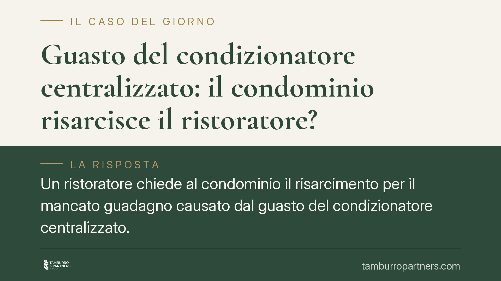

Guasto del condizionatore centralizzato: il condominio risarcisce il ristoratore?
Un ristoratore chiede al condominio il risarcimento per il mancato guadagno causato dal guasto del condizionatore centralizzato. Una recente pronuncia della Corte d'Appello di Perugia nega il risarcimento: il lucro cessante non si presume, va dimostrato con rigore. Un principio che riguarda ogni esercente danneggiato da un disservizio condominiale.

Il caso
Un ristoratore lamenta un calo di incassi dovuto al guasto dell'impianto di condizionamento centralizzato dell'edificio in cui svolge l'attività. Agisce contro il condominio chiedendo il risarcimento del mancato guadagno nei mesi caldi, quando l'assenza di climatizzazione avrebbe allontanato la clientela.
La domanda viene respinta in primo grado e, secondo quanto riferito, confermata in appello dalla Corte d'Appello di Perugia. Il motivo non è la negazione del disservizio, ma la mancata prova del danno nella sua effettiva consistenza.
Inquadramento normativo
Il risarcimento del danno comprende, ai sensi dell'art. 1223 del codice civile, sia la perdita subita (danno emergente) sia il mancato guadagno (lucro cessante), purché siano "conseguenza immediata e diretta" dell'inadempimento o del fatto illecito.
Il lucro cessante è il profitto che il danneggiato avrebbe presumibilmente conseguito se l'evento dannoso non si fosse verificato. Proprio perché riguarda un guadagno mancato, è intrinsecamente più difficile da provare rispetto a una spesa già sostenuta. Ma la difficoltà non esonera dall'onere probatorio.
Qui entra in gioco l'art. 2697 c.c.: chi fa valere un diritto in giudizio deve provare i fatti che ne costituiscono il fondamento. Spetta quindi al ristoratore dimostrare non solo il guasto, ma il nesso tra il guasto e il calo degli incassi, oltre all'entità precisa di quest'ultimo.
Perché la domanda è stata respinta
Il punto cruciale è la distinzione tra l'esistenza del danno e la sua quantificazione. La valutazione equitativa prevista dall'art. 1226 c.c. consente al giudice di stimare l'importo quando il danno non può essere provato nel suo preciso ammontare. In altri termini: l'equità interviene sul *quanto*, non sul *se*. Non è uno strumento per colmare la mancata prova dell'esistenza stessa del pregiudizio.
Nel caso esaminato, il calo di fatturato non era riconducibile con certezza al solo guasto. Nel periodo di riferimento incidevano fattori alternativi di rilievo, in primo luogo gli effetti della pandemia sulla ristorazione. La flessione degli incassi poteva avere molte cause concorrenti, e il ristoratore non ha isolato la quota attribuibile specificamente alla mancata climatizzazione.
La Corte ha quindi preteso una prova articolata: confronto tra i fatturati dei periodi omogenei, documentazione contabile e pagamenti tracciabili, eventuale perizia tecnica sull'impatto del disservizio, esclusione delle concause esterne. In assenza di questa ricostruzione analitica, la domanda non poteva essere accolta.
Implicazioni pratiche
Per l'esercente il messaggio è netto: non basta affermare di aver perso clienti. Occorre costruire un impianto probatorio capace di dimostrare che quel calo deriva da quel guasto e non da altro. Le allegazioni generiche, anche se verosimili, non reggono in giudizio.
Per il condominio, la pronuncia conferma che la responsabilità per i servizi comuni non si traduce automaticamente in obbligo risarcitorio. Chi chiede il risarcimento deve provare il danno; il condominio può e deve contestare il nesso causale e indicare le concause alternative.
In entrambi i casi, la differenza la fa la documentazione raccolta a ridosso dell'evento, quando i dati sono ancora recuperabili e attendibili.
Cosa fare in concreto
- Documentate subito il disservizio: segnalazioni scritte all'amministratore, PEC, verbali, date di inizio e fine del guasto.
- Conservate i dati contabili comparabili: fatturati dei periodi precedenti e successivi, registri dei corrispettivi, incassi tracciabili per isolare la flessione effettiva.
- Acquisite una perizia tecnica: una valutazione professionale sull'impatto del guasto rafforza il nesso causale tra disservizio e calo di attività.
- Mappate le concause: individuate in anticipo i fattori alternativi (stagionalità, eventi esterni, pandemia) per dimostrare quale quota di danno è realmente imputabile al guasto.
- Agite con tempestività sul piano probatorio: ricostruire il danno a distanza di tempo è molto più difficile; la prova raccolta vicino all'evento è quella che regge in giudizio.
---
Contributo informativo a cura di Tamburro & Partners Avvocati – Avv. Giuseppe Tamburro. Non costituisce parere legale.
Ogni condominio ha una storia a sé.
Se gestisci un'amministrazione e vuoi un confronto su una specifica questione condominiale, scrivi allo studio. Ti rispondiamo entro un giorno lavorativo.